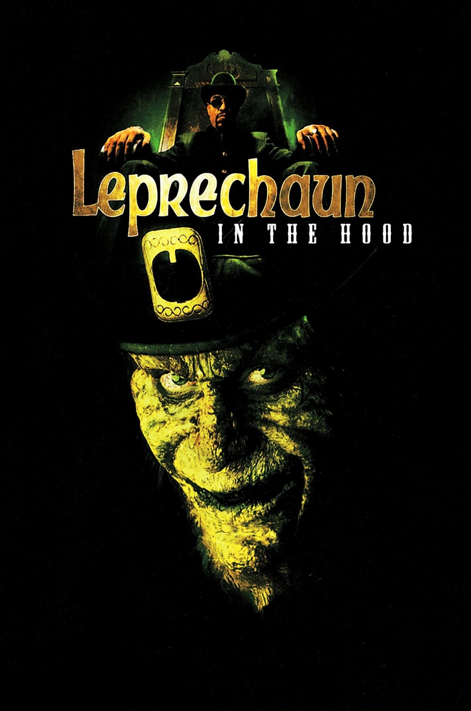
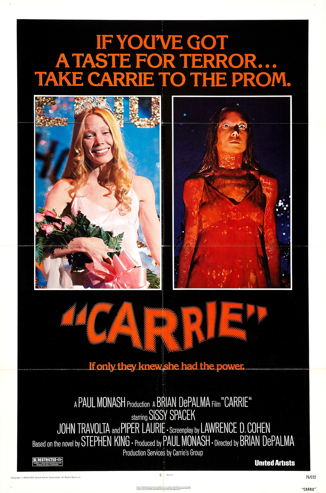
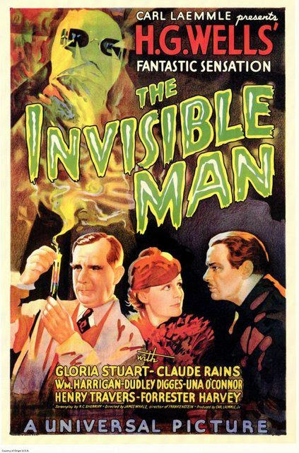
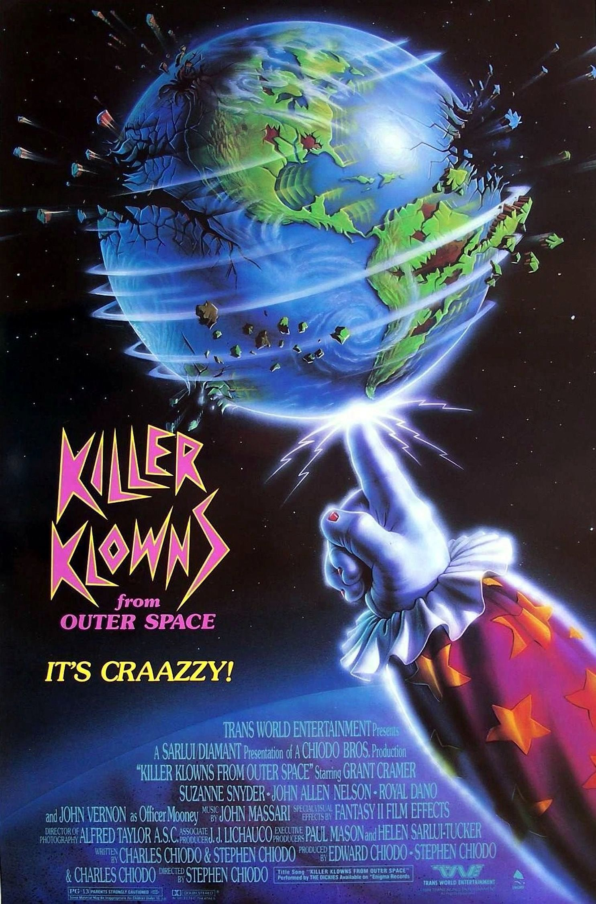
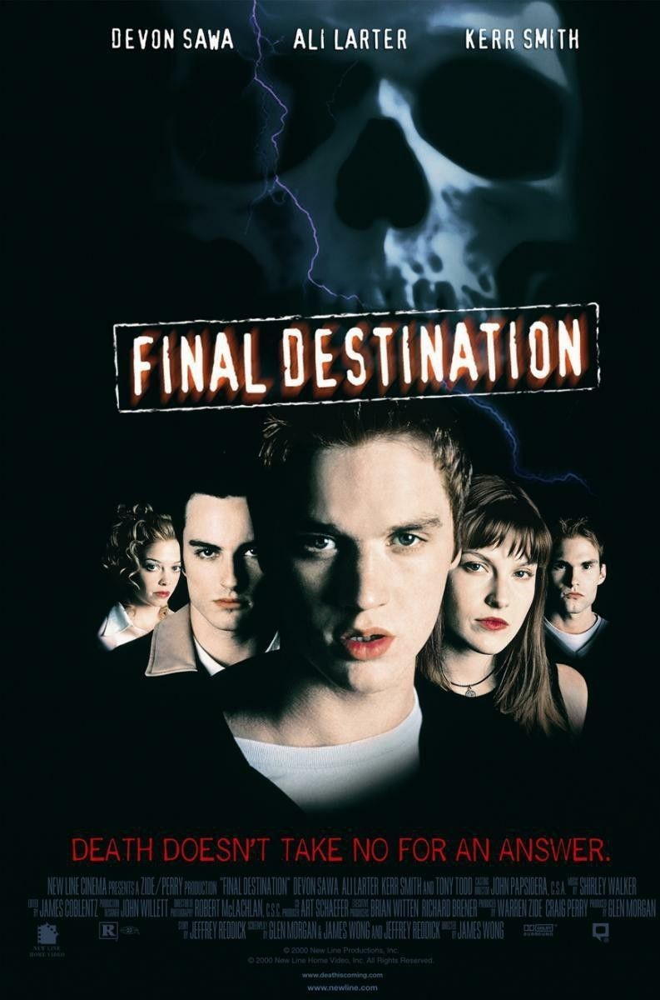

The Kill Count would be nothing without counting the kills in horror movies, so here are the numbers. This is the part where we do an intro and do a sketch, but sadly I can't fully capture the magic of James A. Janisse in one site (at least with my current skills). Though it was a hard pick, for the sake of making the choices below diverse (and not too overwhelming to code and research) below are 5 films, each ranging in their number of kills, execution and sub-genres.
They are ordered in asceding order by their kill count.
Leprechaun in the Hood (2000) - 10 kills

Leprechaun in the Hood (also known as Leprechaun 5 or Leprechaun 5: In the Hood) is a 2000 American black comedy-horror film directed by Rob Spera and the fifth installment in the Leprechaun series. The film follows Warwick Davis as the evil leprechaun Lubdan, who searches for his magic flute that three hoodlums stole and kills anyone who gets in his way. (Wikipedia)
All in all, I'd say it's my favorite out of the Leprechaun franchise, mostly because it doesn't take itself seriously at all. This movie it's so silly at times it's easy to forget it's a horror flick, especially when you see the Leprechaun smoking a clover and rapping. I still can't believe they got Ice-T to play in it.
Carrie (1976) - 73 kills

Carrie is a 1976 American supernatural horror film directed by Brian De Palma from a screenplay written by Lawrence D. Cohen, adapted from Stephen King's 1974 epistolary novel of the same name. The film stars Sissy Spacek as Carrie White, a shy teenage girl who is constantly mocked and bullied at her school. She later develops the power of telekinesis and uses it to wreak vengeance on her tormentors. (Wikipedia)
Carrie was one of the first horror movies I got into, while gory, the themes really resonated with my tween/teen self and helped me see that horror movies are not just jumpscares and creepy monsters with no motive, but can be a great storytelling tool.
The Invisible Man (1933) - 105 kills

The Invisible Man is a 1933 pre-Code American science fiction horror film directed by James Whale loosely based on H. G. Wells's 1897 novel, The Invisible Man, produced by Universal Pictures, and starring Gloria Stuart, Claude Rains and William Harrigan. The film involves a stranger named Dr. Jack Griffin (Rains) who is covered in bandages and has his eyes obscured by dark glasses, the result of a secret experiment that makes him invisible, taking lodging in the village of Iping.(Wikipedia)
I am not an avid watcher of retro horror movies, but this one really stuck out to me. While pretty silly (without even trying to), the practical effects are still very impressive for their time and they really made me appreciate the work behind it more. Just the thought of having to paint every still makes this feat absolutely remarkable.
Killer Klowns From Outer Space (1988) - 234 kills

Killer Klowns From Outer Space is a 1988 American science fiction comedy horror film written, directed and produced by the Chiodo Brothers and starring Grant Cramer, Suzanne Snyder, John Allen Nelson and John Vernon. It is the only film written and directed by the Chiodo Brothers, who also created the practical effects and makeup. It concerns evil extraterrestrials who resemble clowns arriving on Earth and invading a small town in order to capture, kill and harvest the human inhabitants to use as sustenance.(Wikipedia)
God this movie is the absolute definition of silly. I think it really reaches The Room levels of campiness, it's so tacky and dumb that it's great. Even though the protagonists are the blandest beings ever, the alien clowns and every single special effect that comes with them are so colorful and memorable that you almost forget about the main 3.
Final Destination (2000) - 292 kills

Final Destination Final Destination is a 2000 American supernatural horror film directed by James Wong, with a screenplay written by Wong, Glen Morgan, and Jeffrey Reddick, based on a story by Reddick. It is the first installment in the Final Destination film series and stars Devon Sawa, Ali Larter, Kerr Smith, and Tony Todd. Sawa portrays a teenager who cheats death after having a premonition of a catastrophic plane explosion. He and several of his classmates leave the plane before the explosion occurs, but Death later takes the lives of those who were meant to die on the plane.(Wikipedia)
One of my favorite horror movie franchises. Maybe the premise of the movies is not inherintely deep but the sheer creativity put into every single kill got me hooked (and also more paranoid). Final Destination really knows how to play with suspense and with the viewers expectations. Though not all FD movies rely on mostly practical effects, the early ones do and I absolutely love that.